Vistoria ECV para transferência
A vistoria obrigatória do DETRAN-SC para transferir o veículo. Rápida, sem burocracia e com o laudo registrado direto no sistema.
Segurança para quem compra, transparência para quem vende. Vistoria para transferência, vistoria cautelar e muito mais, com estrutura completa e equipe especializada.
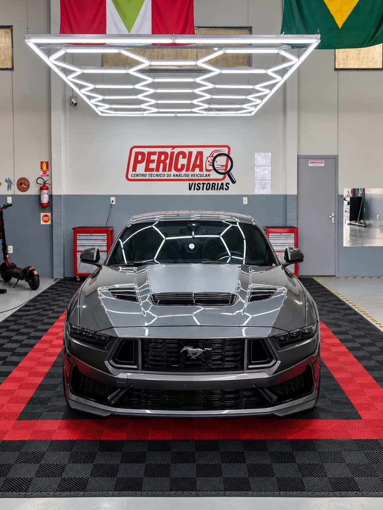
Da vistoria obrigatória do DETRAN à análise completa antes de fechar negócio. Atendemos motos, carros, caminhonetes e caminhões.
A vistoria obrigatória do DETRAN-SC para transferir o veículo. Rápida, sem burocracia e com o laudo registrado direto no sistema.
Não compre no escuro. Conferimos chassi, motor, estrutura e histórico de sinistro e leilão. Proteção total contra golpes.
Conheça as 3 modalidades →Comprando carro novo? Faça uma análise completa antes de fechar o negócio: estrutura, pintura, documentação e histórico.
Nós pegamos o seu veículo onde você estiver, realizamos a vistoria obrigatória e devolvemos. Rápido, prático e sem preocupação.
Consultoria completa para regularizar kit turbo, suspensão, freios, rodas, escape e troca de motor. Evite multas e dor de cabeça.
Vistoria com equipe preparada para a tecnologia dos veículos eletrificados, com segurança e procedimento correto.
Vistoria de certificação para veículos de coleção. Valorize e preserve a história do seu clássico.
Mande uma mensagem contando a situação do seu veículo. A gente diz exatamente o que fazer.
Perguntar no WhatsApp →Três modalidades para atender diferentes níveis de análise: estrutural, estrutural com pintura e Ultra Garantida. Todos os níveis incluem o levantamento do histórico disponível nas bases consultadas, com registros de sinistro, leilão e outras ocorrências cadastrais relevantes.
Histórico, identidade e integridade estrutural
A estrutura somada ao mapeamento eletrônico da carroceria
Análise ampliada com cobertura conforme regulamento
A modalidade mais completa reúne histórico, estrutura e pintura com verificações eletrônicas, aferições de fluidos e medições de componentes. Conheça os equipamentos usados em cada etapa:
Nota técnica: as análises de fluidos e óleo são triagens técnicas indicativas, não laboratoriais. A termografia identifica padrões e diferenças de temperatura, sujeitos às condições do ensaio, emissividade e superfície. As leituras eletrônicas dependem da compatibilidade e dos dados disponibilizados pelo veículo. A inspeção é não invasiva e realizada sem desmontagem.
Do carro de passeio ao caminhão: área coberta, iluminada e preparada para vistoriar veículos de todos os portes.
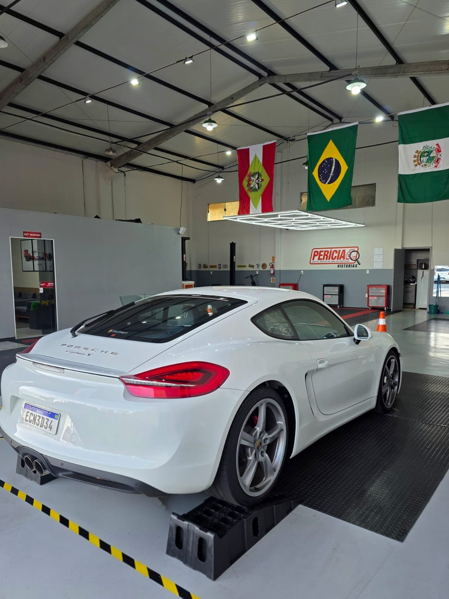
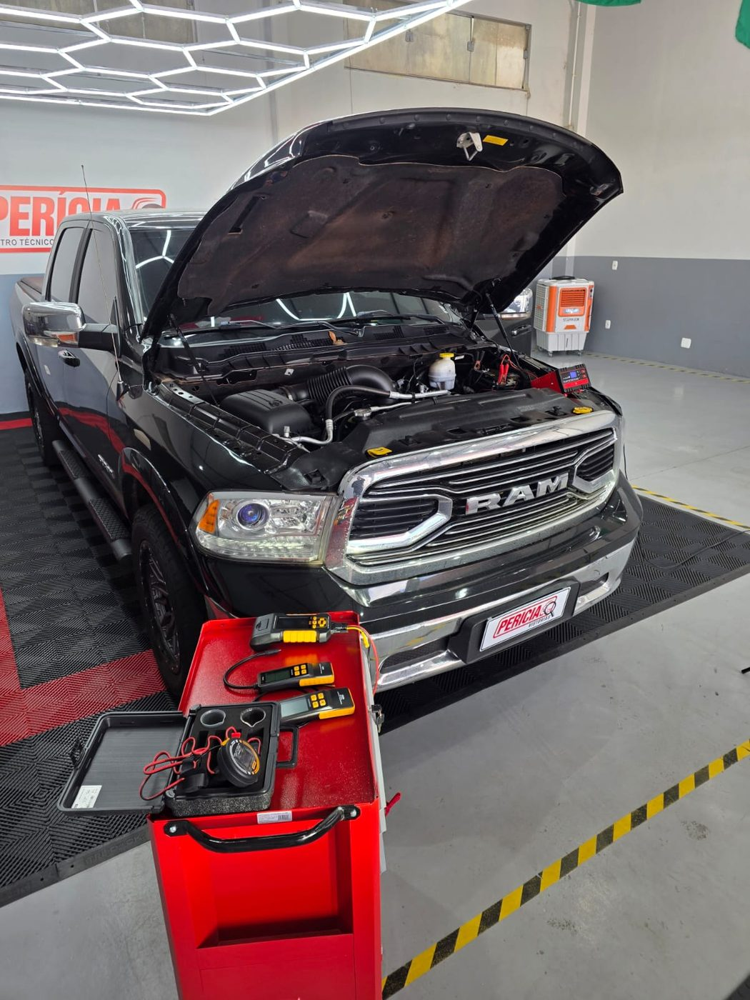
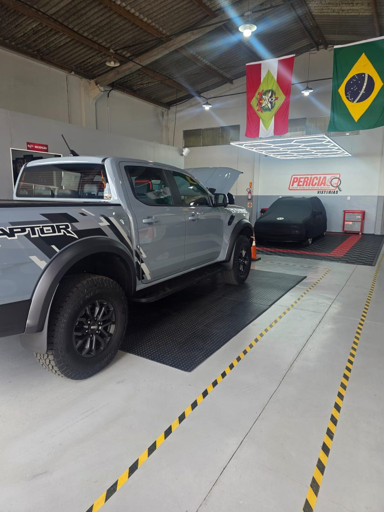
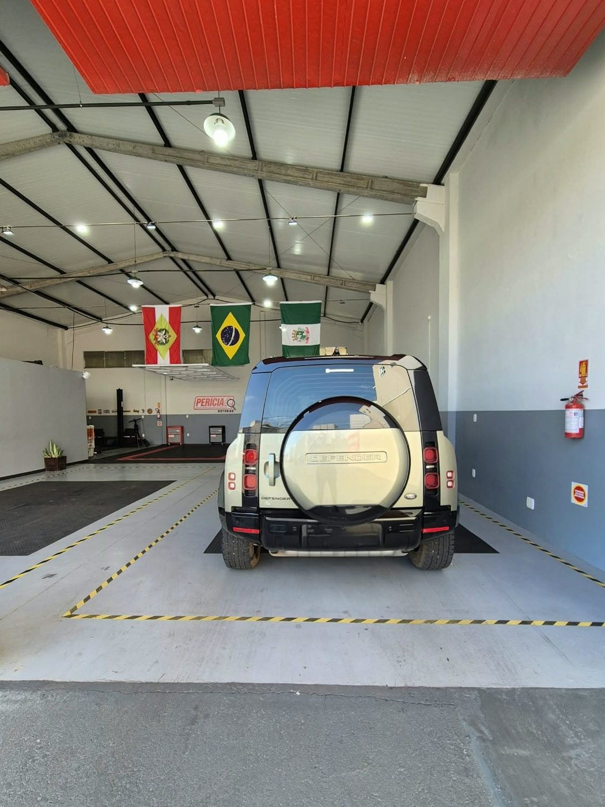
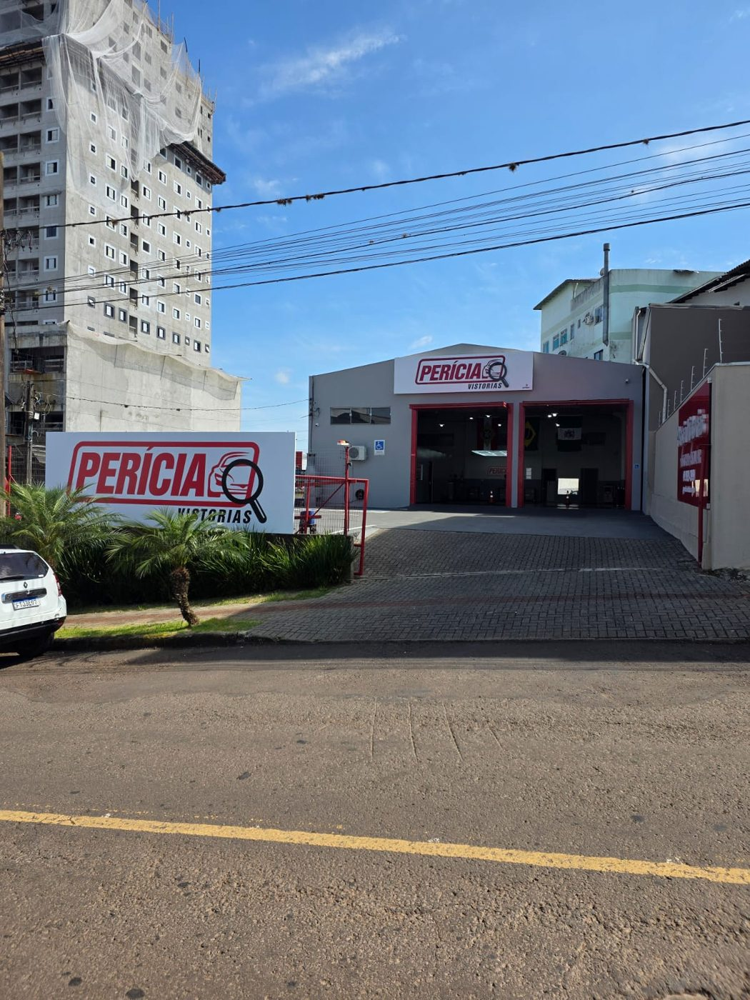
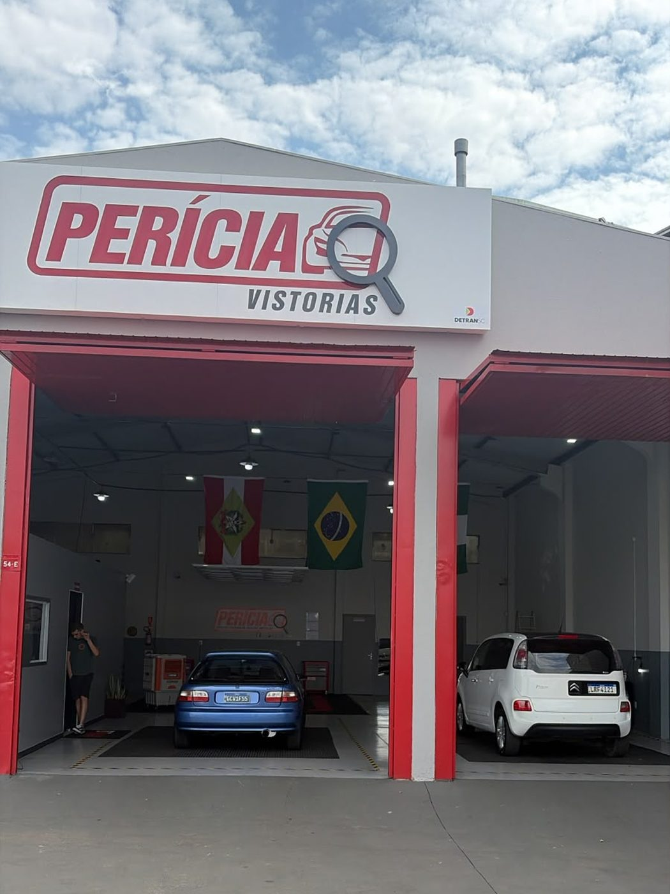
Recepção confortável para você esperar com tranquilidade enquanto cuidamos do seu veículo.
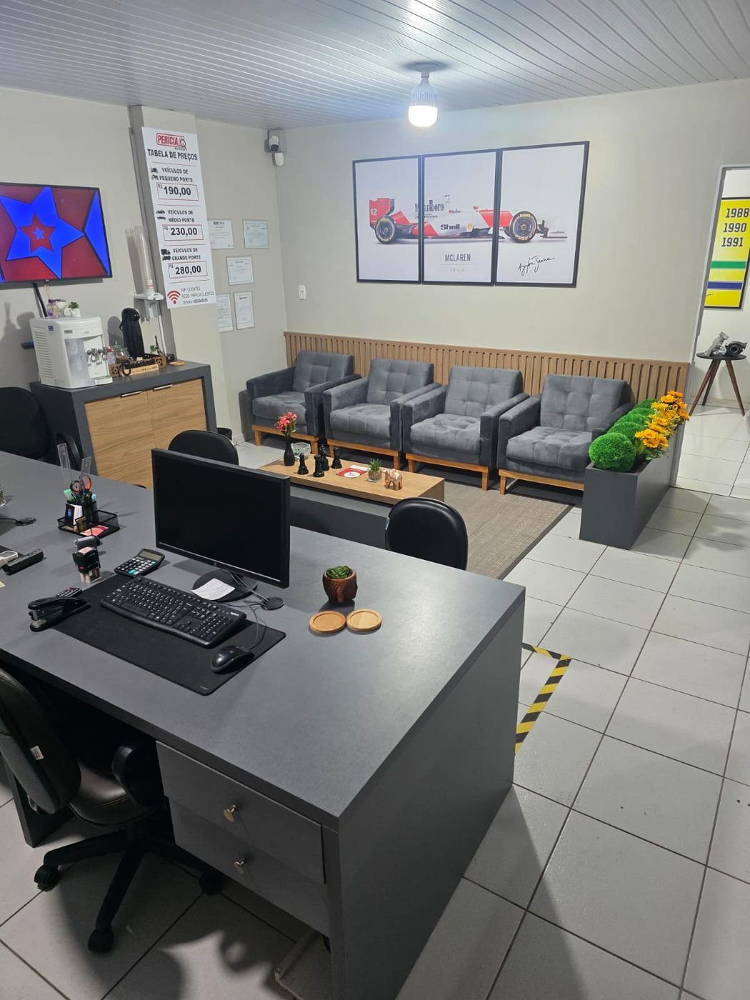
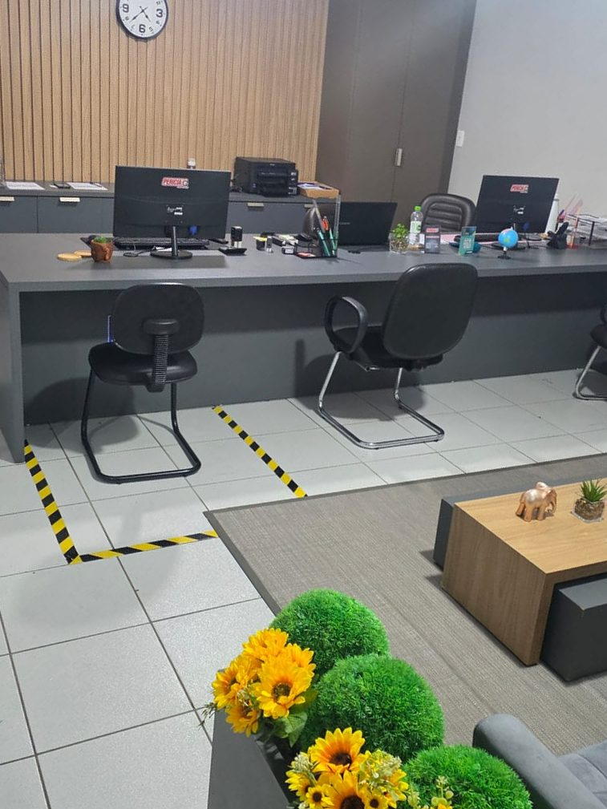
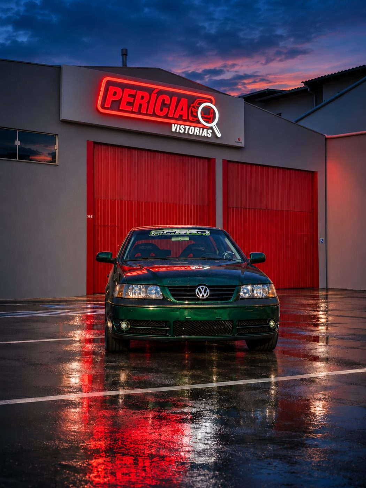
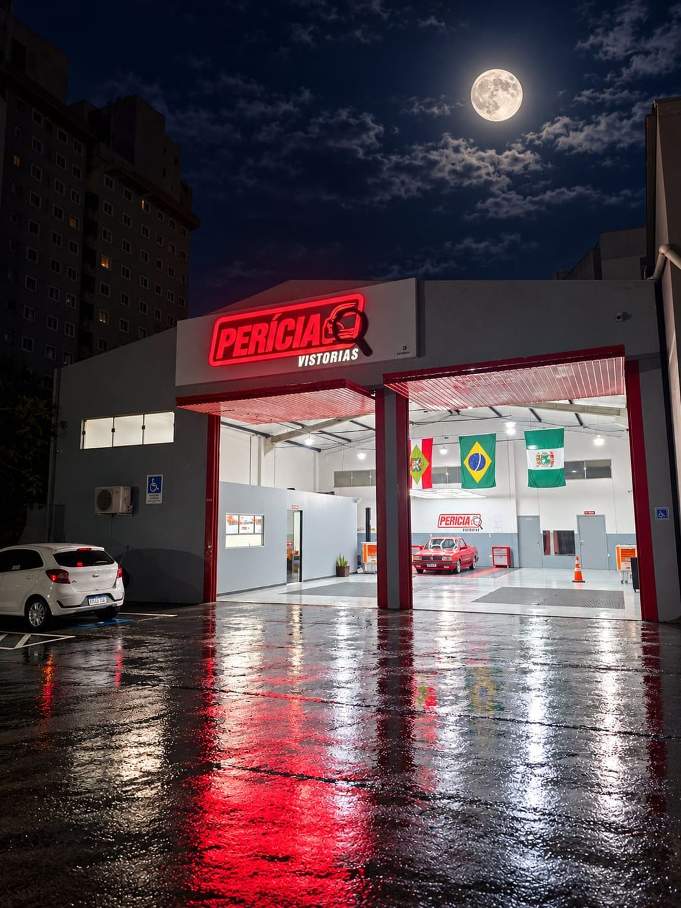
Envie a foto do documento do veículo e diga o que precisa. Já confirmamos o serviço e o horário.
Venha até a nossa unidade no Passo dos Fortes, ou peça o leva e traz e nós buscamos.
O vistoriador confere chassi, motor, placas e itens de segurança com atenção a cada detalhe.
O resultado é registrado direto no sistema do DETRAN-SC e você segue com o seu processo.
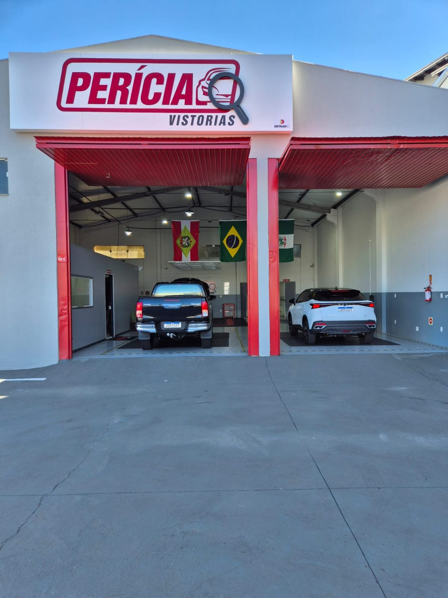
Solução completa para lojas, revendas e concessionárias de Chapecó e região. Um único parceiro para toda a operação.
Usamos um sistema desenvolvido sob medida para a nossa operação.
Ter tudo em mãos deixa o atendimento ainda mais rápido.
CRLV-e, CRV ou ATPV-e (impresso ou digital no celular).
RG ou CNH de quem estiver levando o veículo.
Em condições de conferir chassi, motor, placas e itens de segurança.
Modificações, coleção ou veículo de outro estado podem pedir documentos extras. Pergunte antes pelo WhatsApp.
A vistoria ECV é a obrigatória do DETRAN-SC, exigida para transferência e outros processos. A cautelar é opcional e serve para proteger quem compra: verifica chassi, motor, estrutura e histórico de sinistro e leilão antes de fechar negócio.
Atendemos de segunda a sexta, das 8h às 18h, e aos sábados, das 8h às 11h. Recomendamos chamar no WhatsApp (49) 99929-3999 antes para confirmar o serviço e o melhor horário. Assim você é atendido sem espera.
Sim. Somos ECV credenciada pelo DETRAN-SC (credencial 0860/20) e o resultado é registrado diretamente no sistema.
Sim. Com o serviço leva e traz, pegamos o veículo onde você estiver, fazemos a vistoria e devolvemos. Consulte a disponibilidade para o seu endereço.
Sim. Nossa estrutura recebe motos, carros, caminhonetes e caminhões.
Explicamos exatamente o que precisa ser corrigido. Depois de resolver, é só trazer o veículo novamente.
Aceitamos Pix pela chave CNPJ 37.646.642/0001-72 (Condá Vistorias LTDA). Para outras formas de pagamento, fale com a gente.
Avaliações reais, publicadas por clientes no perfil da Perícia Vistorias no Google.
Excelente atendimento, profissionais qualificados... Fui em outro estabelecimento que o pessoal reprovou porque não conseguia identificar o número no motor, me indicaram remarcação... Fui neles e conseguiram limpar o local e posicionar a luz de forma que a foto aparece direitinho, me salvaram de gastar 500,00 reais! O barato pode sair caro no final.... Super indico!!!
O serviço foi realizado com profissionalismo, agilidade e transparência em todas as etapas. A equipe demonstrou conhecimento técnico, organização e cordialidade, transmitindo confiança durante todo o processo. Parabéns pelo compromisso com a qualidade e pela eficiência. Recomendo os serviços da Perícia Vistorias a quem busca um atendimento sério e de confiança.
Fui muito bem atendida, ambiente maravilhoso! Quando estive aí fui atendida pela Aline que se mostrou muito prestativa e competente! Indico de olhos fechados!
Excelente atendimento, equipe atenciosa, organizada e muito profissional. A vistoria foi realizada com agilidade e todas as dúvidas foram esclarecidas de forma clara. Parabéns pelo serviço prestado.
Muito bem atendido desde a chegada no local, até a emissão do documento! Total cordialidade e profissionalismo.
Atendimento organizado, rápido e atencioso, com excelente estrutura e equipe gentil e profissional!
Excelente, ótimo atendimento, por ser minha primeira pesquisa tinha algumas dúvidas, e foram sanadas rápido.